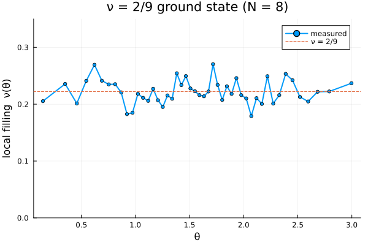

3. Higher fillings via the outer Jastrow
The Jain sequence has two knobs: the number of filled $\Lambda$-levels n, and the Jastrow power p (the number of attached vortices, even). The filling is $\nu = n/(pn+1)$:
p | n | $\nu$ |
|---|---|---|
| 2 | 1 | 1/3 |
| 2 | 2 | 2/5 |
| 4 | 1 | 1/5 |
| 4 | 2 | 2/9 |
A key design point of this package: the Jain–Kamilla projection always binds a single vortex pair, and any higher filling is reached just by raising p — the extra vortices ride along as an outer holomorphic Jastrow factor that stays in the lowest Landau level automatically,
\[\Psi = \Phi_1^{\,p-2}\;\mathcal{P}_{\mathrm{LLL}}[\Phi_n\,\Phi_1^2],\qquad \Phi_1=\prod_{j<k}(u_jv_k-u_kv_j).\]
So you never bind more than one pair inside the projection. Let us see both halves of this.
using CFsOnSphere
using Random
using LinearAlgebra
LinearAlgebra.BLAS.set_num_threads(1)
using Plots
gr()Plots.GRBackend()Single Λ-level: the state is exactly a Laughlin polynomial
For $n = 1$ the projection is trivial and the identity above collapses to $\Psi = \Phi_1^{\,p+1}$ — the Laughlin state at $\nu = 1/(p+1)$. We can check this directly: build Ψproj and compare it to $\Phi_1^{p+1}$ at several random configurations. If they agree up to a single overall constant, the difference logΨ - (p+1) logΦ₁ is the same for every configuration.
logΦ1(U, V, N) = sum(log(U[i]*V[j] - V[i]*U[j]) for i in 1:N-1 for j in i+1:N)
function laughlin_check(N, p; seed = 11)
Qstar, lm = cf_ground_state_lm(N, 1, p)
ψ = Ψproj(Qstar, p, N, lm)
rng = MersenneTwister(seed)
diffs = ComplexF64[]
for _ in 1:4
θ, ϕ = rand_θ_ϕ_gen(rng, N)
update_wavefunction!(ψ, θ, ϕ)
U = cos.(θ ./ 2) .* exp.(0.5im .* ϕ)
V = sin.(θ ./ 2) .* exp.(-0.5im .* ϕ)
logΨ = logdet(ψ.slater_det) + ψ.jastrow_factor_log
push!(diffs, logΨ - (p + 1) * logΦ1(U, V, N))
end
maximum(abs.(real.(diffs) .- real(diffs[1])))
end
for p in (2, 4)
spread = laughlin_check(6, p)
ν = "1/$(p+1)"
println("p = $p (ν = $ν): max |logΨ - (p+1)logΦ₁ - const| = ", round(spread, sigdigits=3))
endp = 2 (ν = 1/3): max |logΨ - (p+1)logΦ₁ - const| = 1.78e-14
p = 4 (ν = 1/5): max |logΨ - (p+1)logΦ₁ - const| = 2.13e-14Both spreads are at the level of floating-point round-off: Ψproj at $n=1$ is the Laughlin state $\Phi_1^{p+1}$, reached purely through the Jastrow power — no extra projection work.
Two Λ-levels: a genuinely projected state, ν = 2/9
For $n \ge 2$ the projection is nontrivial. Building $\nu = 2/9$ is no harder — set n = 2, p = 4 (two pairs). We sample its density just as in the earlier tutorials.
function density_profile(Qstar, p, l_m_list; seed = 5, n_therm = 5_000, n_steps = 20_000, n_bins = 48)
N = length(l_m_list)
rng = MersenneTwister(seed)
ψ, ψ_next = Ψproj(Qstar, p, N, l_m_list), Ψproj(Qstar, p, N, l_m_list)
logpdf(ψ) = 2.0 * real(logdet(ψ.slater_det) + ψ.jastrow_factor_log)
θ, ϕ = rand_θ_ϕ_gen(rng, N)
θ_next, ϕ_next = copy(θ), copy(ϕ)
σ = π / sqrt(12)
it, σ, _, _ = gibbs_thermalization!(rng, ψ, ψ_next, θ, ϕ, θ_next, ϕ_next, σ, logpdf, n_therm)
θmesh = acos.(LinRange(1.0, -1.0, n_bins + 1))
Agrid = 2π .* (cos.(θmesh[1:end-1]) .- cos.(θmesh[2:end]))
density = zeros(Float64, n_bins)
lpc = logpdf(ψ)
for _ in 1:n_steps
θ_next[it], ϕ_next[it] = proposal(rng, θ[it], ϕ[it], σ)
update_wavefunction!(ψ_next, θ_next[it], ϕ_next[it], it)
lpn = logpdf(ψ_next)
if lpn - lpc >= log(rand(rng))
θ[it], ϕ[it] = θ_next[it], ϕ_next[it]; copy!(ψ, ψ_next, it); lpc = lpn
else
θ_next[it], ϕ_next[it] = θ[it], ϕ[it]; copy!(ψ_next, ψ, it)
end
update_density!(θmesh, θ, density)
it = mod(it, N) + 1
end
0.5 .* (θmesh[1:end-1] .+ θmesh[2:end]), density ./ n_steps ./ Agrid
end
N = 8
Qstar, lm = cf_ground_state_lm(N, 2, 4) # n = 2, p = 4 ⇒ ν = 2/9
@show Qstar length(lm)
θc, dens = density_profile(Qstar, 4, lm)([0.14484349699855983, 0.3504124281597336, 0.4582491863032524, 0.5455230268706541, 0.6214748483513336, 0.689999200529466, 0.7531981483056067, 0.8123653596828639, 0.8683667322128976, 0.9218172676203794 … 2.219775385969414, 2.2732259213768957, 2.3292272939069294, 2.388394505284187, 2.4515934530603274, 2.52011780523846, 2.5960696267191388, 2.683343467286541, 2.7911802254300597, 2.9967491565912336], [0.5882366696676441, 0.6753262545275327, 0.5767775137650276, 0.690605129064351, 0.7715831641095113, 0.6913690727911921, 0.6728434374152955, 0.6737983670738504, 0.6325454058244276, 0.5229194810227303 … 0.7140963986647185, 0.5760135700381865, 0.6187944187412897, 0.7257465404990434, 0.6936609039717136, 0.6096270940191997, 0.5867087822139618, 0.6356011807317921, 0.6371290681854777, 0.6785730153666037])In magnetic units the bulk is a flat plateau at the filling $\nu = 2/9$ (using $Q_{\text{shift}} = N/2\nu$), with the $y=0$ baseline shown for context.
ν = 2 / 9
Qshift = N / (2ν)
νθ = dens .* (2π / Qshift)
plot(θc, νθ; lw=2, marker=:circle, ms=3, label="measured", ylims=(0.0, 0.35),
xlabel="θ", ylabel="local filling ν(θ)", title="ν = 2/9 ground state (N = $N)")
hline!([ν]; ls=:dash, label="ν = 2/9")
This page was generated using Literate.jl.